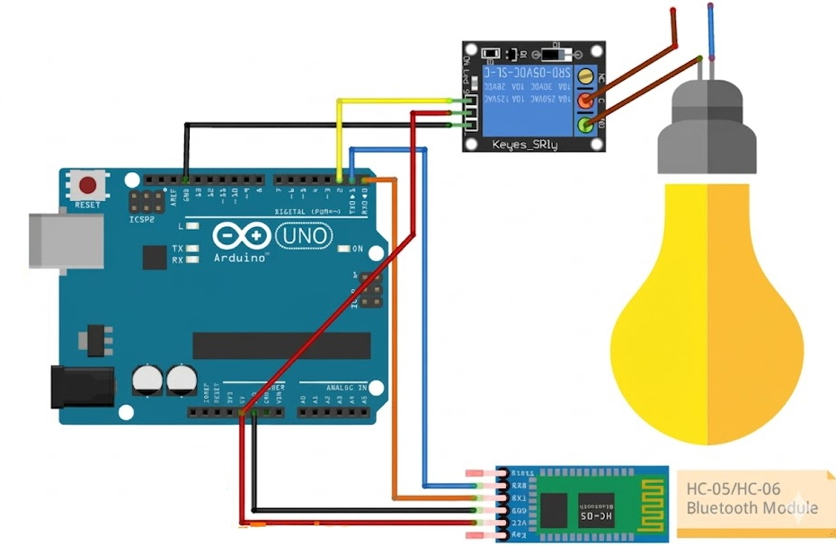

Bluetooth Home Automation using Arduino Uno and HC-05
This project demonstrates how to control home appliances wirelessly using a Bluetooth module (HC-05), Arduino Uno, and a relay module. You can send commands from your smartphone to turn devices ON or OFF, making it a foundation for smart home automation.
BeginnerComponents Required
- Arduino Uno
- HC-05 Bluetooth Module
- Home Appliance (e.g., Lamp, Fan)
- Relay Module (5V)
- Jumper Wires
- USB Cable
- Smartphone (Bluetooth Terminal App)
Circuit Connections
Follow the steps below to connect the Bluetooth module and relay with Arduino.
- Connect HC-05 VCC to Arduino 5V.
- Connect HC-05 GND to Arduino GND.
- Connect HC-05 TX to Arduino RX (pin 0).
- Connect HC-05 RX to Arduino TX (pin 1).
- Connect Relay IN to Arduino pin 2.
- Connect Relay VCC to Arduino 5V.
- Connect Relay GND to Arduino GND.
- Connect the home appliance to the relay's normally open (NO) and common (COM) terminals.

The Bluetooth module receives commands from your phone and sends them to Arduino, which then controls the relay to turn the appliance ON or OFF.
Arduino Code
/*
Project: Bluetooth Home Automation using Arduino Uno and HC-05
Description: Control a relay wirelessly using HC-05 Bluetooth module and Arduino. Send "1" to turn ON and "2" to turn OFF the relay.
Components:
- Arduino Uno
- HC-05 Bluetooth Module
- Relay Module
- Home Appliance
- Jumper Wires
- USB Cable
- Smartphone with Bluetooth Terminal App
Author: Circuit Creation RN
*/
char command;
int relayPin = 2;
void setup() {
pinMode(relayPin, OUTPUT);
digitalWrite(relayPin, HIGH); // make sure relay starts OFF
Serial.begin(9600);
}
void loop() {
if (Serial.available()) {
command = Serial.read();
if (command == '1') {
digitalWrite(relayPin, LOW); // Turn ON (active LOW)
} else if (command == '2') {
digitalWrite(relayPin, HIGH); // Turn OFF
}
}
}
Upload the Code
- Disconnect HC-05 TX/RX before uploading.
- Upload the code using Arduino IDE.
- Reconnect Bluetooth module after upload.
- Pair HC-05 with your phone (password: 1234 or 0000).
- Use a Bluetooth terminal app to send "1" to turn ON or "2" to turn OFF.
Code Explanation
Setup Function
pinMode(relayPin, OUTPUT) sets the relay pin as output.
digitalWrite(relayPin, HIGH) ensures the relay starts OFF (assuming active LOW relay).
Serial.begin(9600) initializes serial communication at 9600 baud rate.
Loop Function
if (Serial.available()) checks if data is available from Bluetooth.
command = Serial.read() reads the incoming command.
If command is '1', sets relay LOW to turn ON.
If command is '2', sets relay HIGH to turn OFF.
Common Mistakes & Troubleshooting
- Bluetooth not connecting: Check pairing password (1234 or 0000).
- Upload error: Disconnect RX/TX before uploading.
- Relay not working: Ensure correct relay connections and power supply.
- No response: Ensure correct baud rate (9600) and app settings.
- Appliance not turning on: Check relay wiring to appliance and power source.
What You Learned
- How Bluetooth communication works with Arduino.
- Using HC-05 module for wireless control.
- Controlling relays for home automation.
- Basic IoT project development for smart homes.